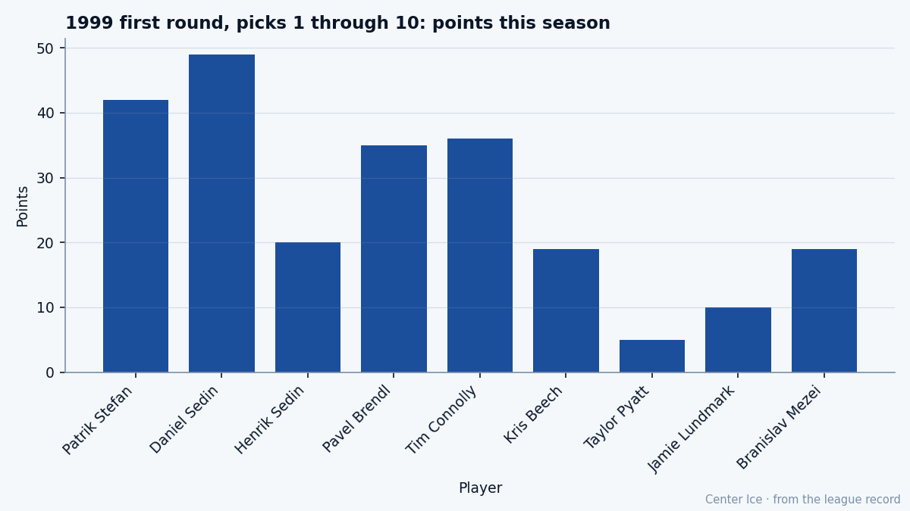

The Paper: Pavel Brendl went to New York so Eric Lindros could leave
4th overall in 1999, traded at 20 as the throw-in in the Lindros deal, now 23 on his third club with speed grades of 92 and 50s everywhere else
 Tomáš VránaProfile writer · The Sweater
Tomáš VránaProfile writer · The SweaterThe piece
On August 20, 2001, the New York Rangers sent  Pavel Brendl81 to Philadelphia. He was 20 years old, the 4th pick of the 1999 draft, 82 games of NHL experience, and the only name that moved east when
Pavel Brendl81 to Philadelphia. He was 20 years old, the 4th pick of the 1999 draft, 82 games of NHL experience, and the only name that moved east when  Eric Lindros89 moved west. Nobody in Philadelphia called Brendl a piece. The club needed a body to make the math work, and the body they chose was a Czech forward whose junior career had been good enough to make the 1999 Memorial Cup all-star team and whose pro career had not yet produced a 20-point season.
Eric Lindros89 moved west. Nobody in Philadelphia called Brendl a piece. The club needed a body to make the math work, and the body they chose was a Czech forward whose junior career had been good enough to make the 1999 Memorial Cup all-star team and whose pro career had not yet produced a 20-point season.
Three years later he is 23, on his third club, playing 16.0 minutes a night for  Carolina Hurricanes, and the League Scouting Bureau still has his potential at 92. His base grade sits at 77. The Book shows 72 today, with the Development Index moving him up 3. Between the 72 on the screen and the 92 on the ceiling are 15 grades, and the question the room keeps asking is whether the gap is a development problem or a will problem.
Carolina Hurricanes, and the League Scouting Bureau still has his potential at 92. His base grade sits at 77. The Book shows 72 today, with the Development Index moving him up 3. Between the 72 on the screen and the 92 on the ceiling are 15 grades, and the question the room keeps asking is whether the gap is a development problem or a will problem.

The grades themselves tell the story in the starkest way the Book allows. Speed: 92. Shot power: 91. Acceleration: 84. Agility: 83. Those are top-10 numbers in the league, the kind of hands and feet that make a man look like a sniper on a breakout pass. Faceoffs: 50. Fighting: 50. Toughness: 50. The three attributes that keep you in a lineup when your hands go cold are all at the floor.
Brendl grew up in Opocno, a town in the Czech Republic that produced very little that the Western Hockey League noticed before the Calgary Hitmen found him there. He arrived in junior, scored, won awards, made the Memorial Cup all-star team in 1999, and the Rangers took him 4th overall behind Pat Kavanagh and the Sedin twins. The background sheet gives no detail about those first two seasons in the pros; the record opens in December 2004 with him already in Carolina, and the only transaction the sheet carries before that is the 2001 trade that sent him from New York to Philadelphia.
What the 2003-04 season shows: 82 games, 12 goals, 9 assists, 21 points, 10.6 minutes a night. A healthy scratch who dressed every game because the club was thin, playing fourth-line minutes, shooting a puck at 91 and touching it almost never. This season: 67 games, 18 goals, 17 assists, 35 points, 16.0 minutes. The pace is 42.8 points per 82, which puts him in the bottom third of regular NHL wingers. He accounts for 7.8 percent of Carolina's goals.
What the speed buys and what it does not
The 92 speed and 91 shot power mean Brendl gets his chances. Eighteen goals in 67 games is not nothing, and at 23 he is younger than most men on the second line. What those numbers do not buy is ice time in tight situations. A coach who puts a man with a 50 toughness on the left wing in the defensive zone knows that the next hit might be the last one that winger takes all night, and the minutes reflect that. Sixteen a night for a man who could be 18 or 19 if he won a board battle.
At $0.80M with 3 years left, Brendl costs $23K per point this season. That is cheap. The Development Index has him up 3, which means the Bureau sees forward movement, and the base-to-potential spread of 15 grades is the kind of gap that keeps a front office patient for another year or two. Carolina is 22-21-13, 79 points, in a Southeast division where  Tampa Bay Lightning and
Tampa Bay Lightning and  Washington Capitals are pulling away and
Washington Capitals are pulling away and  Atlanta Thrashers is falling back. The Hurricanes are in the playoff picture with 12 days to the trade deadline.
Atlanta Thrashers is falling back. The Hurricanes are in the playoff picture with 12 days to the trade deadline.
His draft class splits. Daniel Sedin has 49 points,  Patrik Stefan79 42,
Patrik Stefan79 42,  Tim Connolly80 36, and Brendl 35 among the first rounders on the sheet. Henrik Sedin is 6th among that group at 20. The class has produced one 100-point man (not among those shown), two men above 40, and a scattering of middling regulars. Brendl is where the class expected him to be: good, not special, the player whose ceiling is still above him but whose floor has not moved in two years.
Tim Connolly80 36, and Brendl 35 among the first rounders on the sheet. Henrik Sedin is 6th among that group at 20. The class has produced one 100-point man (not among those shown), two men above 40, and a scattering of middling regulars. Brendl is where the class expected him to be: good, not special, the player whose ceiling is still above him but whose floor has not moved in two years.
The room at Carolina would tell you the same thing in different words. He is fast. He shoots hard. He takes the puck to the net when nobody is on him and loses it when somebody is. Morale sits at 85, not unhappy, not thrilled. He has no injuries on record, which means the 50 toughness is a choice or a limitation that has not yet cost him a game.
What comes next is a contract that runs through age 26, a club that has  Jeff O'Neill82 at 86 points and
Jeff O'Neill82 at 86 points and  Sandis Ozolinsh83 at 69 and does not need him to be more than what he has been. The Bureau will revise the Book in the summer, and if the base does not move, the 15-grade gap becomes a 15-grade verdict: the speed was real, the rest was not coming.
Sandis Ozolinsh83 at 69 and does not need him to be more than what he has been. The Bureau will revise the Book in the summer, and if the base does not move, the 15-grade gap becomes a 15-grade verdict: the speed was real, the rest was not coming.